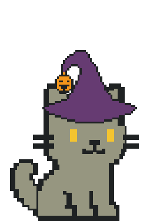
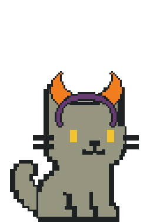
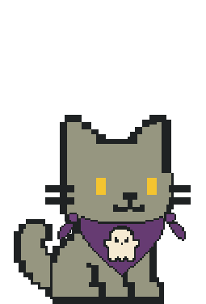
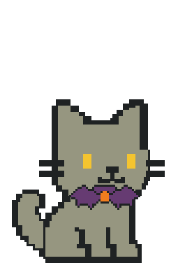

<!doctype html><meta charset="utf-8"><title>Halloween cat2 fitting</title><style>body{background:#eee8e0;font:18px system-ui;display:flex;gap:16px;padding:20px}figure{margin:0;background:white;padding:12px;text-align:center;border-radius:12px}img{display:block;width:255px;height:377px}.icon{width:64px;height:64px;margin:12px auto}</style><figure><figcaption>pumpkinwitch</figcaption></figure><figure><figcaption>devilband</figcaption></figure><figure><figcaption>ghostbandana</figcaption></figure><figure><figcaption>batchoker</figcaption></figure>